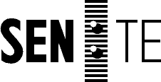
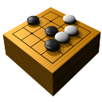

 |
 Goban Help |
Goban is a program to play Go on Mac OS X.
Good entry points include Introduction to Go by Mindy McAdams; and Go, An Addictive Game by Jan van der Steen.
The Show Info menu toggles a panel where you can set the parameters of the game.
A game is finished when both players pass consecutively. Since release v10, Goban attempts to automatically score the game. In Go, even scoring finished games is not an easy task, and Goban will give up trying if it does not succeed to score a game in less than 30 seconds. Goban's choices about what stones are dead or alive can be manually overriden by selecting a stone or group of stones. The board changes to reflect the status you give to the stones, and the score is updated.
Goban is designed to be compatible with a variety of Go playing programs, and currently includes GNU Go. GNU Go is distributed under the GNU GENERAL PUBLIC LICENSE . Contact gnugo@gnu.org, or see http://www.gnu.org/software/gnugo/ for more information.
Use of handicap stones is the best way to make a game even. Alternatively, you can make the program stronger (and slower) by increasing its strength in the Preferences panel.
In The Preferences panel you can specify the launch path and launch arguments to be used for your alternative program. Since release v12, Goban supports the GTP (Go Text Protocol, version 1) as well as the GMP (Go Modem Protocol). Compatible programs should be usable with Goban, but none other than GNU Go have been tested yet.
The commands that Goban sends to a GTP program are: boardsize, fixed_handicap, komi, black, white, genmove_black, genmove_white, undo, quit.
When a game is loaded, Goban looks for registered programs with names matching those from the file's players. If it finds one, it will be used and play will resume automatically. This is currently possible only with the buit-in GNU Go program and other GTP programs.
By sending an email to goban@sente.ch .
For the latest information about Goban, see http://www.sente.ch/software/goban .
Sen:te is a software development company based in Lausanne, Switzerland. We've been doing NeXTSTEP, OPENSTEP, WebObjects, Mac OS X / Cocoa programming since the very beginning. More information about us can be found at www.sente.ch.
Goban is copyrighted work. Since release v12, Goban is free software, distributed under the GNU General Public License:
Copyright (c) 1997-2001, Sen:te (Sente SA). All rights reserved.
This program is free software; you can redistribute it and/or modify it under the terms of the GNU General Public License as published by the Free Software Foundation - version 2.
This program is distributed in the hope that it will be useful, but WITHOUT ANY WARRANTY; without even the implied warranty of MERCHANTABILITY or FITNESS FOR A PARTICULAR PURPOSE. See the GNU General Public License in file COPYING for more details.
You should have received a copy of the GNU General Public License along with this program; if not, write to the Free Software Foundation, Inc., 59 Temple Place - Suite 330, Boston, MA 02111, USA.
For more information about this license, contact goban@sente.ch.
Thanks to:
Marco Scheurer, Sen:te, Lausanne
Copyright (c) 1997-2001, Sen:te (Sente SA). All rights reserved.